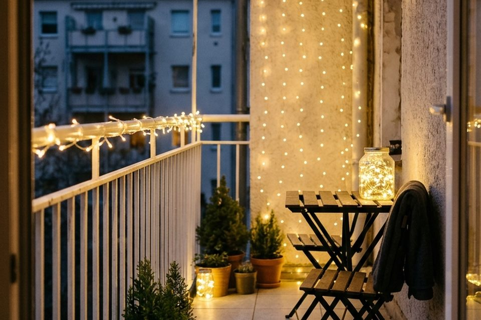

Lichterketten auf dem Balkon: 6 Ideen mit Einkaufsliste & Kosten
Im Winter ist es ab 17 Uhr dunkel – und genau dann sieht ein Balkon mit warmem Licht am schönsten aus. Mit drei bis vier Lichterketten wird auch ein kleiner Mietbalkon zum Lichtort. Der ganze Look wie auf dem Bild kostet unter 150 €, ein Einstieg ab ca. 45 €.
Zur Einkaufsliste & den Kosten ↓
Die 6 Ideen
1. Lichterkette am Geländer
Die Basis. Eine warmweiße Lichterkette (10 m, ca. 100 LEDs) locker um den oberen Handlauf wickeln – nicht straff spannen, dann wirkt es weicher. Mit kleinen Kabelbindern alle 50 cm fixieren, damit der Wind sie nicht abreißt.
ca. 15–30 €
2. Lichtervorhang an der Hauswand
Ein Vorhang aus senkrechten Lichtsträngen (z. B. 2 × 1 m) hinter dem Tisch macht aus der kahlen Wand einen Hintergrund wie im Café. Ohne Bohren: mit Klebehaken für außen oder an einer Spannstange zwischen Decke und Boden aufhängen.
ca. 20–30 €
3. Kugel-Lichterkette im Zickzack über dem Balkon
Die Lichterkette mit großen Kugelbirnen (Festoon, 5–10 m) von der Hauswand zum Geländer und zurück spannen. Sie wirkt wie ein Lichterdach und ist der Teil, der auf Fotos am meisten auffällt. Auf bruchfeste Kunststoff-Birnen achten.
ca. 25–40 €
4. Leuchtendes Glas auf dem Tisch
Einen dünnen Mikro-Lichterdraht (mit Batterie oder USB) in ein großes Glas oder eine alte Flasche stopfen – das sieht aus wie ein Glas voller Glühwürmchen und ersetzt die Kerze, die bei Wind sowieso ausgeht.
ca. 10–20 €
5. Zeitschaltuhr: Licht geht von selbst an
Mit einer Zeitschaltuhr für außen (oder Lichterketten mit eingebautem 6-Stunden-Timer) leuchtet der Balkon jeden Abend, ohne dass du rausgehst. Das spart Strom und lässt die Wohnung auch von der Straße aus bewohnt wirken.
ca. 10–15 €
6. Pflanzen mitbeleuchten
Ein paar immergrüne Töpfe (Efeu, Zwergkonifere, Heide) unter den Lichtern fangen das Licht auf und machen den Balkon lebendig statt nur hell. Eine kurze Lichterkette einfach locker um die Konifere legen.
ca. 15–30 € (wenn noch keine Pflanzen da sind)
Strom, Akku oder Solar?
| Steckdose | Akku / Batterie | Solar | |
|---|---|---|---|
| Im Winter | zuverlässig | gut, alle paar Abende laden | lädt oft nicht genug |
| Brauchst du | Außensteckdose | nichts | Sonne aufs Panel |
| Am besten für | große Ketten, Vorhang | Glas, kurze Ketten | Sommer |
Für Lichterketten draußen immer auf IP44 oder höher achten (spritzwassergeschützt). Kabel nicht durch die zugeklemmte Balkontür führen – dafür gibt es flache Fensterdurchführungen.
Einkaufsliste
| Was | Menge | ca. Preis |
|---|---|---|
| Lichterkette außen, warmweiß, 10 m (IP44) | 1 | 15–30 € |
| Lichtervorhang, ca. 2 × 1 m | 1 | 20–30 € |
| Kugel-Lichterkette (Festoon), 5–10 m | 1 | 25–40 € |
| Mikro-Lichterdraht + großes Glas | 1 | 10–20 € |
| Zeitschaltuhr für außen | 1 | 10–15 € |
| Kabelbinder, Klebehaken für außen | 1 Set | 5–10 € |
Richtwerte für Deutschland, Stand November 2026. Die Preise schwanken je nach Händler und Saison.
Was kostet der Lichter-Balkon?
Einstieg – ca. 45 €: Lichterkette am Geländer, leuchtendes Glas auf dem Tisch, Kabelbinder.
Komplett wie auf dem Bild – ca. 85–145 €: alle vier Lichterketten, Zeitschaltuhr und Befestigung – also unter 150 €.
Tipp: Nur warmweiß kaufen (ca. 2.700 Kelvin) und nicht mischen – kaltweiß wirkt draußen schnell wie Baustellenlicht.
Häufige Fragen
Darf ich auf dem Mietbalkon Lichterketten aufhängen?
In der Regel ja, solange nichts gebohrt wird und die Nachbarn nicht geblendet werden. Blinkende Lichter und sehr helle Strahler können Ärger geben; warmweiße Lichterketten mit Timer sind meist unproblematisch.
Wie viel Strom verbrauchen LED-Lichterketten?
Wenig. Eine LED-Lichterkette mit 100 LEDs braucht meist nur wenige Watt – sechs Stunden pro Abend über drei Monate kosten typischerweise nur wenige Euro.
Was tun, wenn der Balkon keine Steckdose hat?
Akku-Lichterketten mit USB-Anschluss nehmen und alle paar Tage drinnen laden. Solar lohnt sich im Winter meist nicht, weil das Panel zu wenig Licht bekommt.
Mehr Ideen für den Winter: Winterbalkon gemütlich machen – 10 Ideen.